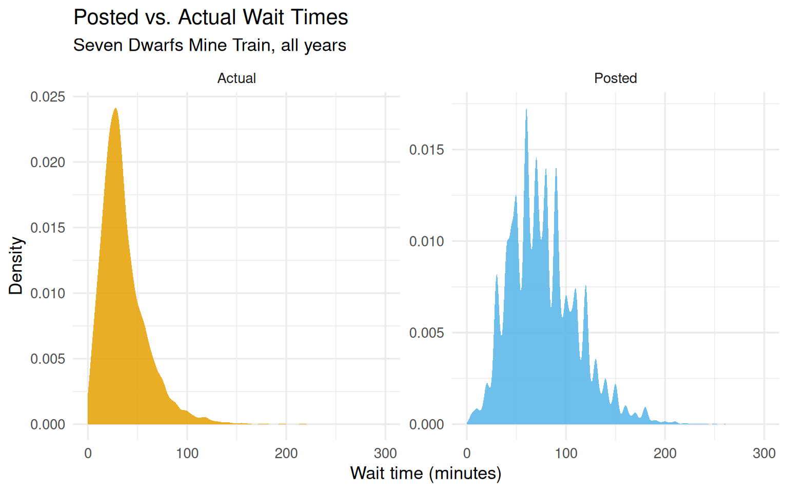
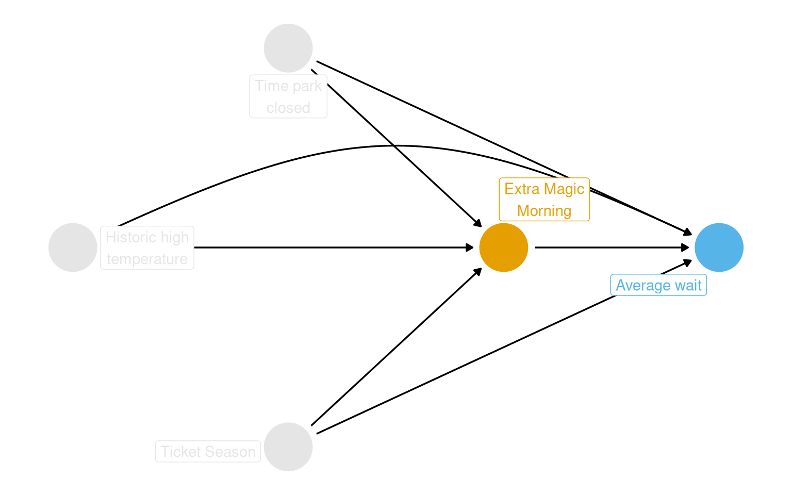
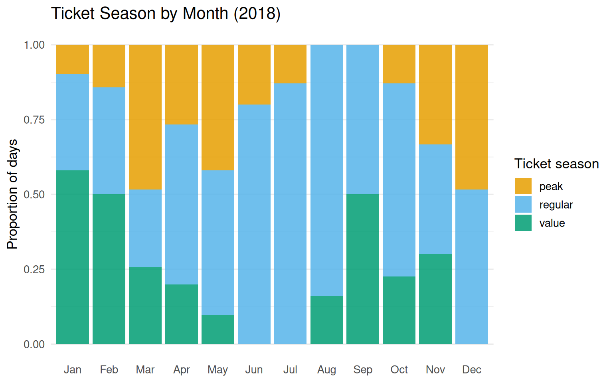
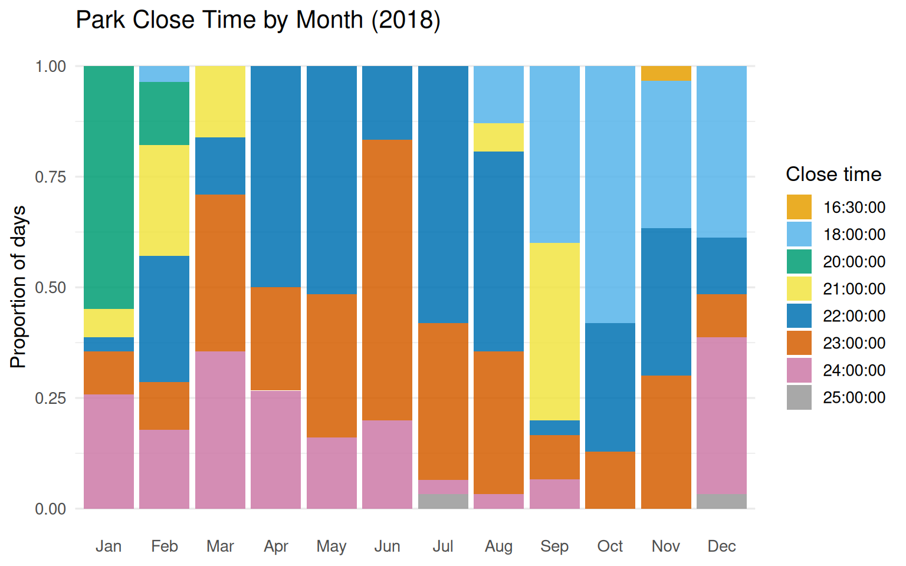
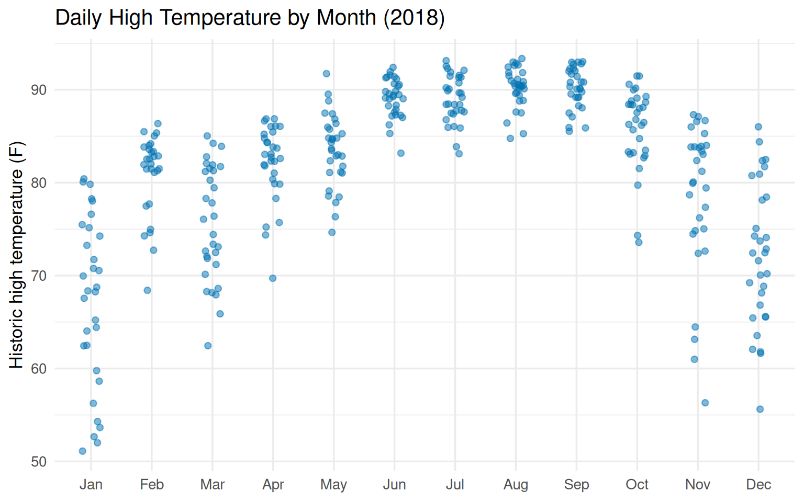
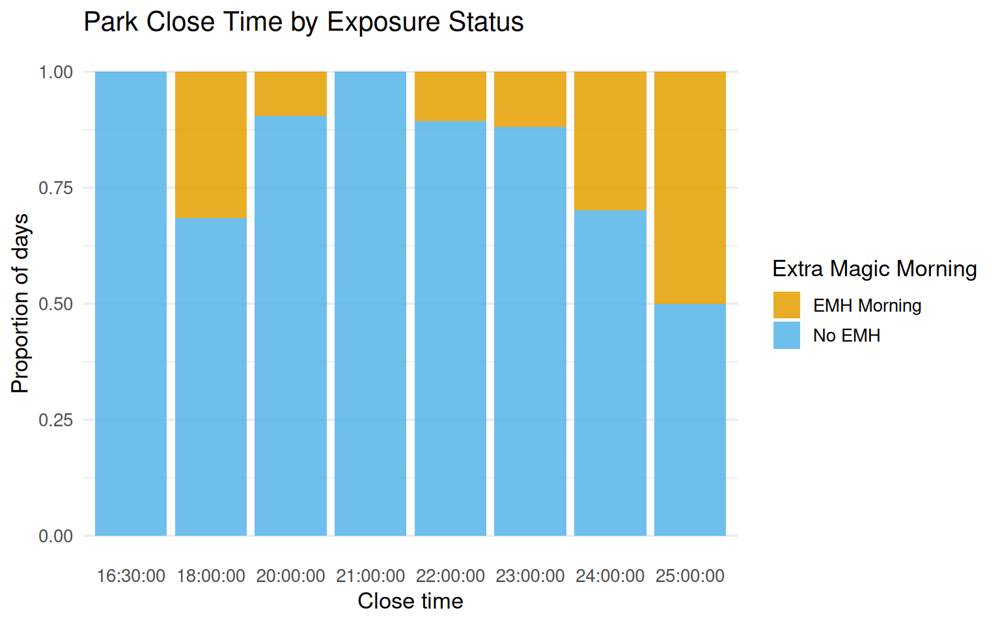
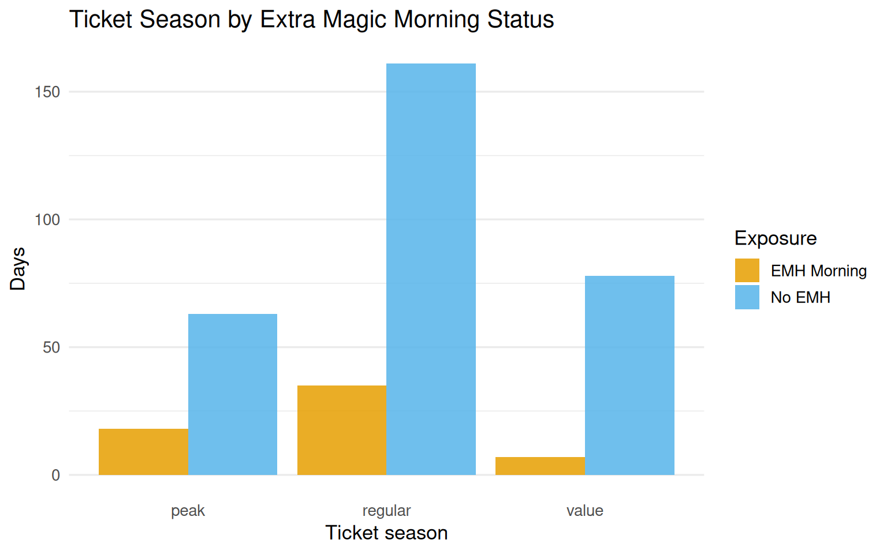

Data preparation for causal inference looks familiar on the surface: you clean things up, do some EDA, maybe merge a couple of datasets. What makes it different is that every decision you take during prep needs to connect back to the causal question and the target trial you are trying to emulate. This chapter walks through that process using wait time data from Disney World.
The chapter covers six areas: getting to know the data, framing the causal question, linking protocol steps to tidyverse code, joining multiple sources, building a descriptive table, flagging missing data, and checking the positivity assumption.
7.1 The Data
The touringplans package contains attraction wait time data from Disney and Universal theme parks. There are 14 attractions in the package.
Table 8.1: Attractions available in the touringplans package.
Dataset
Name
Short Name
Park
Land
Opened
Duration (min)
Avg Wait / 100
alien_saucers
Alien Swirling Saucers
Alien Saucers
Disney's Hollywood Studios
Toy Story Land
2018-06-30
2.5
10.0
dinosaur
DINOSAUR
DINOSAUR
Disney's Animal Kingdom
DinoLand U.S.A.
1998-04-22
3.5
3.0
expedition_everest
Expedition Everest - Legend of the Forbidden Mountain
Expedition Everest
Disney's Animal Kingdom
Asia
2006-04-07
4.0
4.0
flight_of_passage
Avatar Flight of Passage
Flight of Passage
Disney's Animal Kingdom
Pandora - The World of Avatar
2017-05-27
6.0
4.0
kilimanjaro_safaris
Kilimanjaro Safaris
Kilimanjaro Safaris
Disney's Animal Kingdom
Africa
1998-04-22
20.0
4.0
navi_river
Na'vi River Journey
Na'vi River
Disney's Animal Kingdom
Pandora - The World of Avatar
2017-05-27
5.0
5.0
pirates_of_caribbean
Pirates of the Caribbean
Pirates of Caribbean
Magic Kingdom
Adventureland
1973-12-17
7.5
1.5
rock_n_rollercoaster
Rock 'n' Roller Coaster Starring Aerosmith
Rock Coaster
Disney's Hollywood Studios
Sunset Boulevard
1999-07-29
1.5
2.5
seven_dwarfs_train
Seven Dwarfs Mine Train
7 Dwarfs Train
Magic Kingdom
Fantasyland
2014-05-28
3.0
5.0
slinky_dog
Slinky Dog Dash
Slinky Dog
Disney's Hollywood Studios
Toy Story Land
2018-06-30
3.0
5.0
soarin
Soarin' Around the World
Soarin'
Epcot
World Nature
2005-05-05
8.0
3.0
spaceship_earth
Spaceship Earth
Spaceship Earth
Epcot
World Celebration
1982-10-01
16.0
3.0
splash_mountain
Splash Mountain
Splash Mountain
Magic Kingdom
Frontierland
1992-07-17
18.0
3.5
toy_story_mania
Toy Story Mania!
Toy Story Mania!
Disney's Hollywood Studios
Toy Story Land
2008-05-31
6.5
4.5
Alongside the attraction data, parks_metadata_raw has 181 columns of daily park-level information: ticket season, historic temperature, special events, and more.
Table 8.5: Unique posted wait time values (minutes). All are multiples of 5.
0
25
50
75
100
125
150
175
200
225
260
5
30
55
80
105
130
155
180
205
230
270
10
35
60
85
110
135
160
185
210
235
280
15
40
65
90
115
140
165
190
215
240
300
20
45
70
95
120
145
170
195
220
250
0
The two wait time distributions look quite different. Actual times are shorter on average and roughly right-skewed; posted times are discretized to 5-minute increments and slightly heavier in the right tail.
Show code
seven_dwarfs_train |>pivot_longer(starts_with("wait_minutes"),names_to ="wait_type",values_to ="wait_minutes" ) |>mutate(wait_type =case_when( wait_type =="wait_minutes_actual"~"Actual", wait_type =="wait_minutes_posted"~"Posted" ) ) |>ggplot(aes(wait_minutes, fill = wait_type)) +geom_density(color =NA, alpha =0.85) +facet_wrap(~wait_type, scales ="free_y") +scale_fill_okabe_ito() +labs(x ="Wait time (minutes)",y ="Density",fill ="Wait type",title ="Posted vs. Actual Wait Times",subtitle ="Seven Dwarfs Mine Train, all years" ) +theme_minimal(base_size =13) +theme(legend.position ="none")

Figure 8.1: Distribution of posted and actual wait times for the Seven Dwarfs Mine Train. Posted times are rounded to 5-minute increments, while actual times are shorter on average and less discretized.
7.2 The Causal Question
The causal question driving the next several chapters is:
Does having Extra Magic Hours in the morning at Magic Kingdom causally increase the average posted wait time for the Seven Dwarfs Mine Train between 9 AM and 10 AM on the same day in 2018?
The exposure is a binary day-level indicator: did Magic Kingdom run Extra Magic Hours in the morning (yes or no)? The outcome is the average posted wait time during the 9–10 AM window.
DAG
The proposed DAG encodes the belief that Extra Magic Morning status and average wait times share three common causes: ticket season, park close time, and historic high temperature. Each of these opens a backdoor path that needs to be blocked.
Show code
coord_dag <-list(x =c(Season =0, close =0, weather =-1, x =1, y =2),y =c(Season =-1, close =1, weather =0, x =0, y =0))labels <-c(x ="Extra Magic\nMorning",y ="Average wait",Season ="Ticket Season",weather ="Historic high\ntemperature",close ="Time park\nclosed")dagify( y ~ x + close + Season + weather, x ~ weather + close + Season,coords = coord_dag,labels = labels,exposure ="x",outcome ="y") |>tidy_dagitty() |>node_status() |>ggplot(aes(x, y, xend = xend, yend = yend, color = status)) +geom_dag_edges_arc(curvature =c(rep(0, 5), 0.3)) +geom_dag_point() +geom_dag_label_repel(aes(label = label), seed =1630) +scale_color_okabe_ito(na.value ="grey90") +theme_dag() +theme(legend.position ="none") +coord_cartesian(clip ="off")

Figure 8.2: Proposed DAG for the effect of Extra Magic Hours in the morning on average Seven Dwarfs Mine Train wait times between 9 and 10 AM. Ticket season, park close time, and historic high temperature are confounders.
7.3 From Protocol to Code
The target trial protocol maps cleanly onto tidyverse operations. The table below shows that correspondence.
Table 8.6: Mapping target trial protocol elements to tidyverse functions.
Protocol Element
tidyverse Function(s)
Eligibility criteria
`filter()`
Exposure definition
`mutate()`
Assignment procedures
`mutate()`, `select()`
Follow-up period
`mutate()`, `pivot_longer()`, `pivot_wider()`
Outcome definition
`mutate()`
Analysis plan
`select()`, `mutate()`, `*_join()`
The full target trial protocol for this study looks like this:
Show code
tibble(`Protocol Step`=c("Eligibility criteria","Exposure definition","Assignment procedures","Follow-up period","Outcome definition","Causal contrast","Analysis plan" ),`Target Trial`=c("Days from 2018.","Exposed: Magic Kingdom had Extra Magic Hours in the morning.","Random assignment, 50% probability, non-blinded.","Park open until 10 AM on the same day.","Average posted wait time for Seven Dwarfs Mine Train, 9--10 AM.","Average Treatment Effect (ATE).","ATE via IPW, weighted for temperature, ticket season, close time." ),`Observational Emulation`=c("Same.","Same.","Days assigned per observed data. Randomization emulated via confounding adjustment.","Same.","Same.","Same.","Same. Confounders from DAG in Figure 1." )) |>kbl() |>kable_styling(bootstrap_options =c("striped", "hover", "condensed"),full_width =TRUE ) |>column_spec(1, bold =TRUE, width ="12em") |>column_spec(2:3, width ="18em")
Table 8.7: Target trial protocol for the effect of Extra Magic Morning on Seven Dwarfs Mine Train wait times, and the corresponding observational emulation.
Protocol Step
Target Trial
Observational Emulation
Eligibility criteria
Days from 2018.
Same.
Exposure definition
Exposed: Magic Kingdom had Extra Magic Hours in the morning.
Same.
Assignment procedures
Random assignment, 50% probability, non-blinded.
Days assigned per observed data. Randomization emulated via confounding adjustment.
Follow-up period
Park open until 10 AM on the same day.
Same.
Outcome definition
Average posted wait time for Seven Dwarfs Mine Train, 9--10 AM.
Same.
Causal contrast
Average Treatment Effect (ATE).
Same.
Analysis plan
ATE via IPW, weighted for temperature, ticket season, close time.
Same. Confounders from DAG in Figure 1.
Building the outcome dataset
The outcome is the average posted wait time in the 9 AM hour, filtered to 2018.
Variable names follow the “Column Names as Contracts” convention (Riederer 2020): variables from park-level metadata are prefixed with park_, wait time variables with wait_.
Extra Magic Mornings by month
About 12 to 16% of days had Extra Magic Mornings in most months. December stands out at 42%.
Table 8.10: Months with zero or very few days of a particular ticket season. Peak tickets were absent in August and September; value tickets were absent in June, July, and December.
Month
Ticket Season
Days
Aug
peak
0
Sep
peak
0
Jun
value
0
Jul
value
0
Dec
value
0
Jan
peak
3
May
value
3
Feb
peak
4
Jul
peak
4
Oct
peak
4
Show code
ticket_season_by_month |>ggplot(aes(month, n, fill = park_ticket_season)) +geom_col(position ="fill", alpha =0.85) +scale_fill_okabe_ito() +labs(y ="Proportion of days",x =NULL,fill ="Ticket season",title ="Ticket Season by Month (2018)" ) +theme_minimal(base_size =13) +theme(panel.grid.major.x =element_blank())

Figure 8.3: Proportion of days by ticket season across 2018. Regular season dominates the summer months; peak season clusters around school holidays.
Close times show more variety than you might expect:
Table 8.11: Count of 2018 days by Magic Kingdom park close time.
Close Time
Days
22:00:00
105
23:00:00
93
24:00:00
58
18:00:00
57
21:00:00
28
20:00:00
21
25:00:00
2
16:30:00
1
Show code
parks_metadata |>count_by_month(park_close) |>ggplot(aes(month, n, fill =ordered(park_close))) +geom_col(position ="fill", alpha =0.85) +scale_fill_okabe_ito() +labs(y ="Proportion of days",x =NULL,fill ="Close time",title ="Park Close Time by Month (2018)" ) +theme_minimal(base_size =13) +theme(panel.grid.major.x =element_blank())

Figure 8.4: Proportion of days by close time, across months. Earlier close times concentrate in late fall and winter.
Show code
parks_metadata |>mutate(month =month(park_date, label =TRUE, abbr =TRUE)) |>ggplot(aes(month, park_temperature_high)) +geom_jitter(height =0, width =0.15, alpha =0.5, color ="#0072B2") +labs(y ="Historic high temperature (F)",x =NULL,title ="Daily High Temperature by Month (2018)" ) +theme_minimal(base_size =13)

Figure 8.5: Historic high temperature at Walt Disney World by month. The park is in Florida, so temperatures stay relatively warm year-round, but summers get properly hot.
Joining the datasets
Three May dates are missing from seven_dwarfs_9 (no 9 AM records in the raw data):
Table 8.13: First 10 rows of the analytic dataset after joining wait times with park metadata.
park_date
hour
wait_minutes_posted_avg
wait_minutes_actual_avg
park_extra_magic_morning
park_ticket_season
park_temperature_high
park_close
2018-01-01
9
60.0
NA
0
peak
58.6
23:00:00
2018-01-02
9
60.0
NA
0
peak
53.6
24:00:00
2018-01-03
9
60.0
16.0
0
peak
51.1
24:00:00
2018-01-04
9
68.9
NA
0
regular
52.7
24:00:00
2018-01-05
9
70.6
33.0
1
regular
54.3
24:00:00
2018-01-06
9
33.3
25.3
0
regular
56.2
23:00:00
2018-01-07
9
46.4
32.0
0
regular
65.2
21:00:00
2018-01-08
9
69.5
8.0
0
value
70.8
20:00:00
2018-01-09
9
64.3
47.0
0
value
75.2
20:00:00
2018-01-10
9
74.3
NA
0
value
74.2
20:00:00
7.5 Descriptive Table
The table below gives a summary of the three confounders stratified by exposure status. More days fell into the unexposed group (no Extra Magic Mornings). The regular ticket season was the most common. Close times and temperature look roughly similar across groups, though Extra Magic Morning days were slightly more likely to close early (18:00) and slightly cooler overall.
Because gtsummary output does not convert cleanly to kable in all contexts, here is an equivalent kable version built manually:
Table 8.14: Descriptive summary of confounders by Extra Magic Morning status in the 2018 analytic dataset.
Characteristic
EMH Morning (N=60)
No EMH (N=302)
Ticket season
peak
18
63
regular
35
161
value
7
78
Close time
18:00:00
18
39
20:00:00
2
19
22:00:00
11
93
23:00:00
11
81
24:00:00
17
40
25:00:00
1
1
16:30:00
0
1
21:00:00
0
28
Temperature
Median historic high temp (F)
82.8
84.1
7.6 Missing Data
The vis_miss() plot shows missingness is mostly concentrated in wait_minutes_actual_avg. Posted wait times are missing for about 3% of the year (8 additional days beyond the 3 with no records at all), which is unlikely to meaningfully distort results. Actual wait times are far more incomplete, but since the outcome is posted wait time, that is a separate problem for Chapter 15.
Table 8.16: Nine records from January 24, 2018 during the 9 AM hour: all wait times are missing.
Actual Wait (min)
Posted Wait (min)
NA
NA
NA
NA
NA
NA
NA
NA
NA
NA
NA
NA
NA
NA
NA
NA
NA
NA
7.7 Checking Causal Assumptions
Data cannot prove the assumptions underlying causal inference, but it can reveal cracks in them worth worrying about.
Exchangeability gets its own treatment in Chapter 9 (propensity score evaluation), so we skip it here.
Consistency means the exposure must be well-defined. If the question had been about “Extra Magic Hours” in general rather than specifically in the morning, there would be a consistency problem because morning and evening Extra Magic Hours might have different effects. The chapter’s choice to specify “morning” sidesteps that issue.
Positivity requires that every combination of confounder values contains both exposed and unexposed days. This is where the data can say something concrete.
Single-variable positivity checks
Show code
seven_dwarfs_9 |>mutate(park_close_chr =as.character(park_close),emh_label =if_else(park_extra_magic_morning ==1, "EMH Morning", "No EMH") ) |>ggplot(aes(x = park_close_chr,fill = emh_label )) +geom_bar(position ="fill", alpha =0.85) +scale_fill_okabe_ito() +labs(x ="Close time",y ="Proportion of days",fill ="Extra Magic Morning",title ="Park Close Time by Exposure Status" ) +theme_minimal(base_size =13) +theme(panel.grid.major.x =element_blank())

Figure 8.6: Distribution of park close time by Extra Magic Morning status. Close times of 16:30 and 21:00 had zero exposed days.
Close times of 16:30 and 21:00 had zero exposed days:
Table 8.18: Number of days below 60 F by Extra Magic Morning status. Only one exposed day falls in this range.
Exposure
Days
No EMH
9
EMH Morning
1
Show code
seven_dwarfs_9 |>mutate(emh_label =if_else(park_extra_magic_morning ==1, "EMH Morning", "No EMH")) |>ggplot(aes(x = park_ticket_season, fill = emh_label)) +geom_bar(position ="dodge", alpha =0.85) +scale_fill_okabe_ito() +labs(x ="Ticket season",y ="Days",fill ="Exposure",title ="Ticket Season by Extra Magic Morning Status" ) +theme_minimal(base_size =13) +theme(panel.grid.major.x =element_blank())

Figure 8.8: Distribution of ticket season by Extra Magic Morning status. All three ticket season types appear in both exposure groups, so no positivity violations are visible here.
Ticket season shows no positivity problems: all three levels appear in both groups.
Multi-variable positivity check
With only three confounders, we can check all combinations directly. Temperature is cut into tertiles and close time binned into three categories.
Figure 8.9: Proportion of days with Extra Magic Mornings across bins of temperature, close time, and ticket season. White cells are combinations with no exposed days; yellow cells are fully exposed.
The fully exposed cell in the peak / early-close / cold-temperature corner corresponds almost certainly to the Christmas and New Year period: cold Florida days during peak holiday season that also close early. That combination appears to have always had Extra Magic Mornings. The chapter notes this as a plausible structural positivity violation rather than a chance one.
Table 8.19: Covariate combinations where the proportion exposed is either 0 or 1. These represent potential positivity violations.
Close Time
Temperature Bin
Ticket Season
Proportion Exposed
(1) early
(51.1,65.2]
peak
1 (always exposed)
(1) early
(51.1,65.2]
value
0 (never exposed)
(1) early
(65.2,79.3]
peak
0 (never exposed)
(1) early
(65.2,79.3]
value
0 (never exposed)
(1) early
(79.3,93.4]
peak
0 (never exposed)
(2) standard
(51.1,65.2]
peak
0 (never exposed)
(2) standard
(51.1,65.2]
regular
0 (never exposed)
(3) late
(51.1,65.2]
value
0 (never exposed)
(3) late
(65.2,79.3]
value
0 (never exposed)
(3) late
(79.3,93.4]
value
0 (never exposed)
Ten covariate combinations are either always exposed or never exposed. Whether these are structural or stochastic violations is a question for domain knowledge, not the data.
Summary
This chapter sets up the analytic dataset that carries through the next several chapters. A few things are worth holding onto:
Causal data prep ties each wrangling step to a protocol element. filter() handles eligibility; mutate() handles exposure and outcome definitions; joins handle multi-source data.
The “Column Names as Contracts” convention keeps variable provenance legible.
Missing data in posted wait times is small (about 3%) and unlikely to drive results. Missing actual wait times are a bigger issue addressed later.
Positivity deserves careful attention. Close times of 16:30 and 21:00 have no exposed days; the Christmas period cluster looks like a structural violation for the cold/peak/early-close combination.
These observations do not kill the analysis, but they shape how cautiously we should interpret results at the boundary of the covariate space.